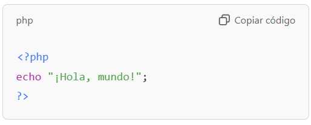

¿Qué es PHP?

PHP (Hypertext Preprocessor) es un lenguaje de programación de código abierto diseñado para el desarrollo web. Permite crear sitios dinámicos e interactivos al ejecutarse del lado del servidor.
Características principales de PHP
- Código abierto:
- Gratuito y con una gran comunidad de soporte.
- Integración fácil:
- Compatible con HTML, CSS y JavaScript.
- Base de datos:
- Se conecta fácilmente a bases de datos como MySQL, PostgreSQL, y SQLite
- Multiplataforma:
- Funciona en sistemas como Windows, Linux y macOS.
- Escalabilidad:
- Ideal para proyectos pequeños y grandes, desde blogs hasta aplicaciones web complejas.
Ejemplo básico en PHP
Este código genera la salida "¡Hola, mundo!" en la página web.
Ventajas de usar PHP
- Rapidez: Procesa solicitudes del servidor de forma eficiente.
- Flexibilidad: Se adapta a cualquier tipo de proyecto web.
- Seguridad: Proporciona herramientas para proteger aplicaciones.
- Amplia compatibilidad: Compatible con la mayoría de servidores web como Apache y Nginx.
¿Dónde se usa PHP?
- Creación de sistemas de gestión de contenidos (CMS) como WordPress, Joomla y Drupal.
- Desarrollo de comercio electrónico, foros y aplicaciones web interactivas.
- Plataformas populares como Facebook y Wikipedia comenzaron con PHP.